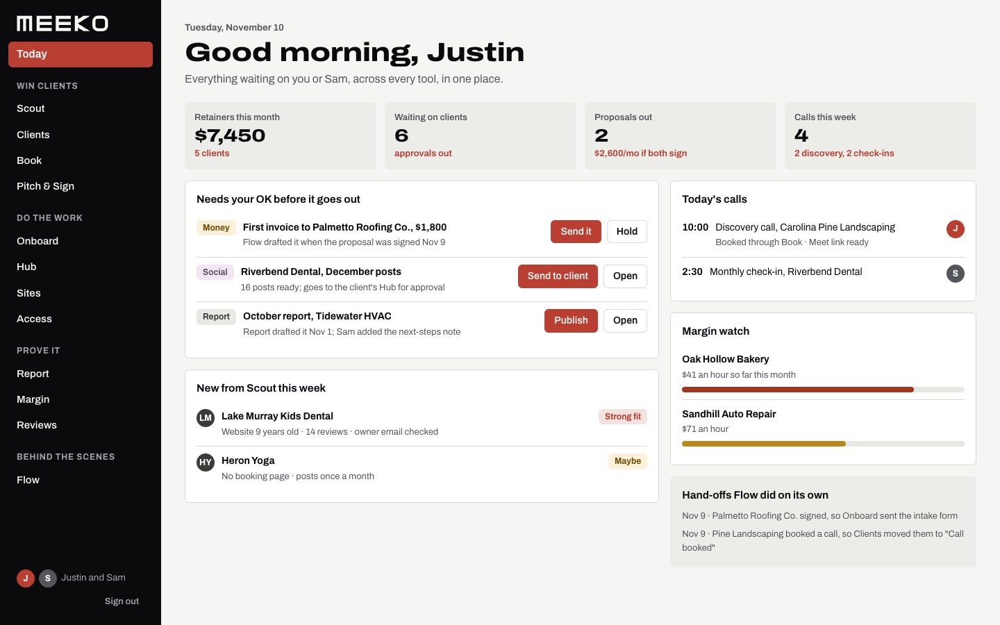
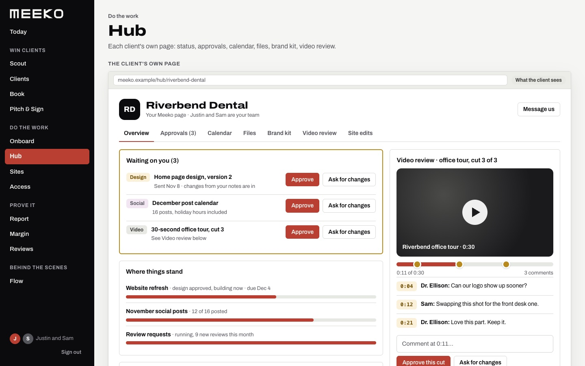
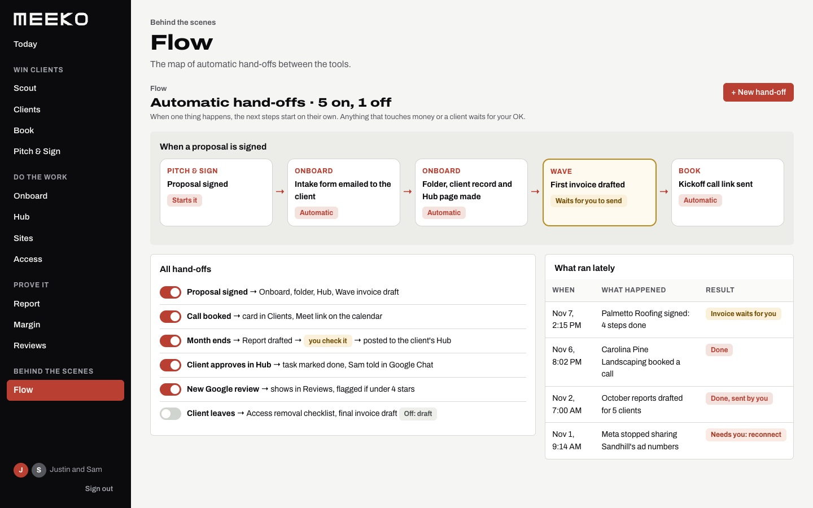
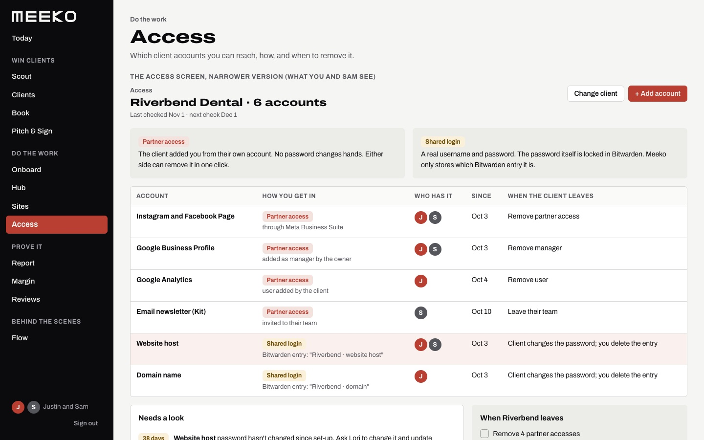
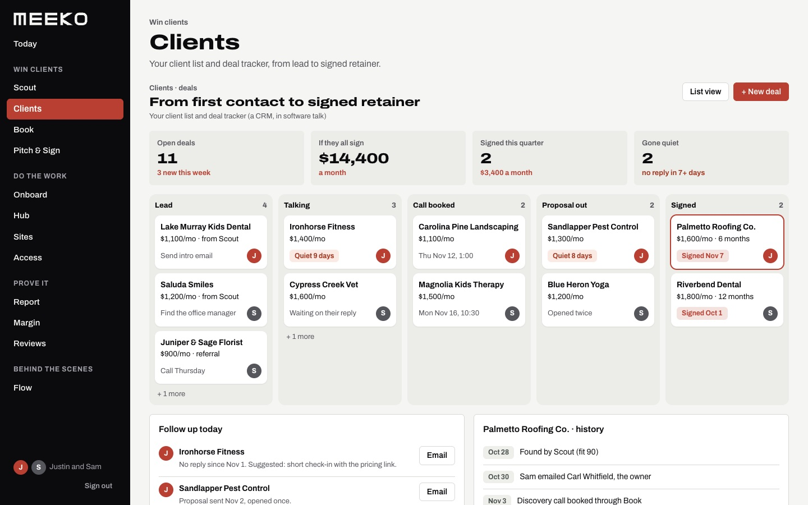
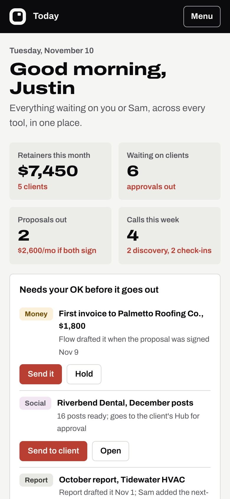
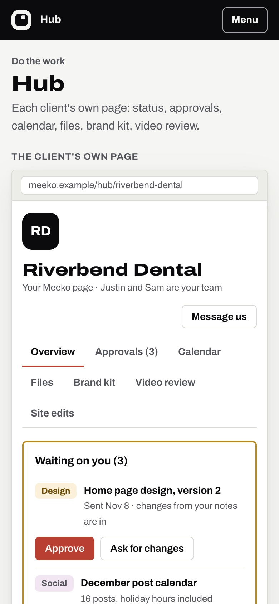

A two-person agency runs on 26 recurring jobs, and renting a tool for each one adds up fast. I mapped every job, priced build against buy, and designed one platform where the tools sit in a single menu, clients get their own page without a login, and anything touching money waits for a person.

Finding clients, pitching, booking calls, onboarding, approvals, reports, reviews, account access: there's a subscription for each one. For two people starting out, renting one per job adds up before the first client signs.
Every job the agency does on repeat, listed one by one before any tool was named.
Each job got a researched recommendation: build, build later, use free or pay. The call was made job by job, not "buy a suite".
The open question once the picks were in: one platform, or a separate app to open for every tool.
"...identify what all agency tools would be most beneficial for our business and what we can build ourselves vs subscribing to a service and spending money. it would be nice to create a "tool suite"..."My brief, Nov 9, 2026
"I would like to see mockups and diagrams of the tools we would build."After picking, Nov 10, 2026, 12:33
AI priced every option. I made every call.
The research pass recommended building 8 jobs, building 2 later, using free tools for 13 and paying for 3. I went wider: build on 17, free on 7, pay on 1, and 1 left undecided. My picks differed from the recommendation on 9 jobs.
Recurring jobs mapped, each with a build, free or paid option.
Jobs I chose to build.
Those 17 jobs folded into 12 tools.
Paid subscription kept.
One of three diagrams: the client journey. The other two, the shared engine under the tools and where free and paid tools plug in, I marked "Looks right".
"Are all these different tools built into the same platform? or all individual apps we would have to open?"Reviewing the first mockups, Nov 10, 2026, 14:21
The first mockups already drew one shared app. My question turned that from an assumption into the design decision, and I approved the one-app shape at 14:55: "looks right".
Then I paused it on purpose at 15:35, "until i get the brand finalized". The brand was locked on Nov 16, so the screens on this page are shown in it.
Twelve tools, one login, one menu in four groups: Win clients, Do the work, Prove it, Behind the scenes.






Two calls on these screens came from the AI design pass, not from me: the Today home screen, and the rule that red is only for buttons. Every business, person and number on these screens is made up; my partner appears under a stand-in name.
Recurring jobs mapped, down to 12 tools to build.
Screens in the branded app, including sign-in and Today.
Diagrams. I marked two of them "Looks right".
Login for all 12 tools.